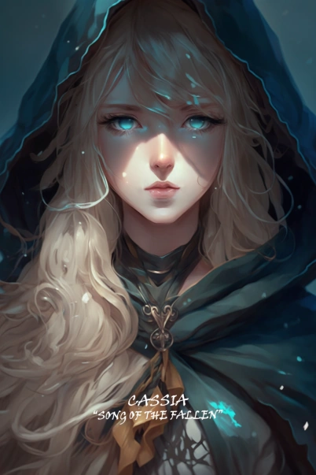

|
|
|
|---|
Ela estava usando roupas civis. Seu traje era arrumado e mundano, mas, apesar disso, ninguém poderia confundi-la com uma pessoa comum. A beleza solene e sobrenatural da garota cega a cercava como uma barreira invisível, fazendo com que algumas pessoas que vieram acender suas próprias velas se afastassem, olhando para ela com uma reverência atônita.
- Descrição,
Capítulo 761 Velas acesas
| Sem Informações | Segundo Pesadelo |
|---|
Cassie foi enviada para o corpo de uma jovem sacerdotisa, cujo dever era cuidar da Alta Sacerdotisa do Templo da Noite, a Um do Norte. Ela era uma das assistentes de One in the North e foi tratada muito bem, tendo aprendido muito com seu conhecimento e sabedoria.
Logo depois que ela entrou no Nightmare, havia apenas estranhos rumores de uma voz agradável que vinha da névoa. Com o passar do tempo, os rumores começaram a mudar, contando histórias de pessoas que ouviram a névoa e desapareceram sem deixar rastros. Os Eyeless suspeitaram que uma criatura corrompida havia entrado em suas terras. Então, uma sacerdotisa foi enviada para investigar, mas ela e sua escolta desapareceram sem deixar rastros.
Finalmente, eles ficaram alarmados. O exército foi convocado e muitos grupos de caça foram enviados para encontrar a criatura. As pessoas continuaram a desaparecer e, um dia, eles encontraram uma aldeia inteira vazia, pois todos haviam sido levados pela névoa.
Durante o ataque à Ivory City, Cassie estava encarregada de controlar o navio. Como ficou sem essência de alma, ela pulou do navio alguns momentos antes de ele atingir o Sun Prince.
